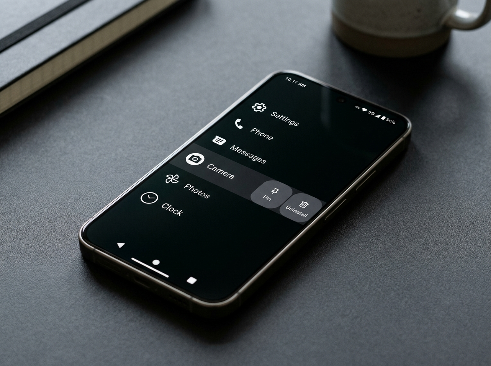

01. Onda alfabética centralizada
Deslize o polegar na lateral para percorrer todos os aplicativos instantaneamente. A lista centraliza automaticamente o item focado com escala ampliada em 60 fps e opção de abertura automática ao soltar o dedo.
NotLauncher substitui grades lotadas de ícones por uma lista limpa em OLED preto puro, onda alfabética centralizada, gestos rápidos e páginas exclusivas para widgets oficiais do Android.

Cada gesto e cada página seguem o padrão nativo do Android sem menus supérfluos.
Deslize o polegar na lateral para percorrer todos os aplicativos instantaneamente. A lista centraliza automaticamente o item focado com escala ampliada em 60 fps e opção de abertura automática ao soltar o dedo.
Deslize qualquer aplicativo para a esquerda para revelar a caixa Material com os botões Fixar na Home e Desinstalar usando o fluxo oficial do Android.
Deslize para a esquerda a partir da tela inicial para acessar seus widgets oficiais do Android sem barras superiores ou rodapés distraindo o espaço.
Sem anúncios, sem contas obrigatórias e sem coleta de lista de aplicativos para servidores externos. Todas as preferências, notas rápidas e atalhos ficam apenas no seu aparelho.
Alterne entre as visualizações ao lado e interaja diretamente com a Wave A–Z ou deslize um aplicativo para revelar os botões de ação.
Captura visual dos quatro pilares atuais: tela inicial silenciosa, Wave centralizada, swipe lateral para fixar ou desinstalar e página limpa de widgets.
Apenas relógio e seus favoritos essenciais em alto contraste.

O item focado permanece no centro da tela com destaque suave ao deslizar.

Deslize para revelar Fixar e Desinstalar no padrão oficial do Android.

Zero cabeçalhos ou rodapés; segure em qualquer ponto para gerenciar.
Construído com Jetpack Compose e Material 3.
| Identificador do pacote | app.notlauncher |
|---|---|
| Compatibilidade mínima | Android 7.0 (API 24) |
| SDK de destino | Android 16 (API 36) |
| Anúncios e rastreadores | Nenhum |